Retis Terminal 公開測試版
使用指南：安裝、登入 tw-001、安裝本機 yfinance、設定金鑰，以及四個 Phema 的用法
適用版本：Retis Terminal 0.1.6-beta（公開測試版）· 連線網站：tw-001-olive-canyon.retis.ai · 更新日期：2026-11-19
Retis Terminal 是在您自己電腦上執行的投資研究工具：看台股報價與新聞、建立交易策略、回測過去的表現，並用模擬帳戶練習下單。不需要寫程式，也不需要打任何指令。
Retis Terminal 裡的每一個畫面叫做 Phema。tw-001 目前提供四個 Phema：新手入門、台灣半導體觀察、策略監看 與 地球檢視。這份指南先說明怎麼安裝、登入與安裝本機 yfinance，再逐一介紹這四個 Phema：用途、怎麼開啟、每個按鈕做什麼，以及結果怎麼看。
您的資料與金鑰留在您的電腦。 工作區、設定、保留的結果與資料金鑰都存在您的電腦上。金鑰只會直接送到該資料商的主機，Retis 的伺服器與任何代理程式都不會收到。tw-001 只保存帳號、點數與使用權紀錄。
測試版提醒：只做模擬交易，不會真的下單，內容也不是投資建議。安裝檔尚未簽章，第一次開啟時會出現安全性提示（第 1 節說明如何處理）。畫面上的文字若與本指南略有不同，以實際畫面為準。
您需要準備
- 一台 Mac（macOS 12 以上，Apple 晶片或 Intel），或 Windows 10、11（64 位元）電腦。提供走勢圖、新聞與回測資料的「本機 yfinance」目前只支援 Apple 晶片的 Mac 與 Windows，安裝時要能連上網路（約下載 50 MB）。
- 一個可以收信的電子郵件，用來建立 tw-001 帳號。
- （選用）您自己的資料金鑰，例如富果（Fugle）行情 API 金鑰。裝好本機 yfinance 後，沒有金鑰也能使用四個 Phema 的主要功能；不能安裝本機 yfinance 的電腦（例如 Intel Mac）則需要富果這類提供歷史價格的金鑰。設定方法見 第 4 節。
1. 安裝 Retis Terminal
到 github.com/retis-ai-sg/retis-terminal-beta/releases/latest，在 Assets 下載安裝檔。請只從這個儲存庫的 Releases 下載。完整步驟與每一步的畫面請看儲存庫裡的 Mac 安裝 與 Windows 安裝，約 3 分鐘。想從原始碼自行建置，見 附錄 D。
Mac
- 下載
Retis-Terminal-<版本>.dmg（目前是 0.1.6-beta），打開後把 Retis Terminal 拖到 應用程式（Applications） 資料夾。
- 在應用程式資料夾雙擊 Retis Terminal。測試版還沒有 Apple 簽章，第一次開啟時 macOS 會說無法驗證開發者：按 完成（不要按 丟到垃圾桶），到 系統設定 → 隱私權與安全性，往下捲動到「安全性」，在 Retis Terminal 旁按 強制打開（或 仍要打開），再按 打開。只有第一次需要。
- 螢幕上方的選單列會出現 Retis Terminal 圖示，瀏覽器會自動開啟 Retis Terminal。點圖示可以看到 Retis Terminal 的版本，以及 開啟 與 結束。
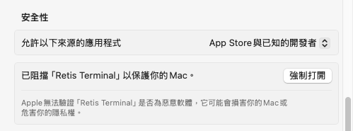
第一次開啟時在「隱私權與安全性」按「強制打開」。
Windows
- 下載
Retis-Terminal-Setup-<版本>.exe 並執行。若出現「Windows 已保護您的電腦」，按 其他資訊 → 仍要執行，再按 下一步，裝好後按 完成。不需要系統管理員權限。
- 之後從 開始 選單打開 Retis Terminal。系統匣（右下角）會出現圖示，瀏覽器會自動開啟 Retis Terminal。Windows 可能先把圖示收在 ^「顯示隱藏的圖示」裡。在圖示上按右鍵可以看到 Retis Terminal 的版本，以及 開啟 與 結束。
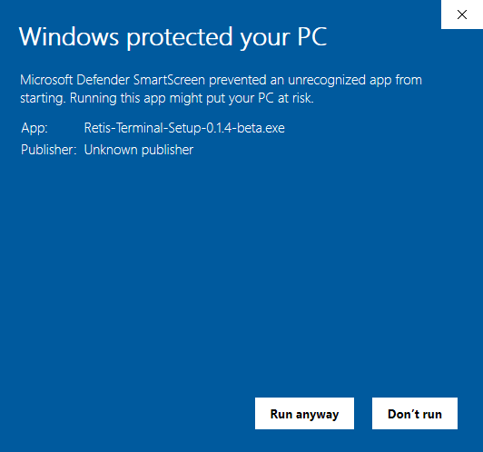
英文版 Windows 的畫面。中文版的按鈕是「其他資訊」與「仍要執行」。
- 關掉瀏覽器分頁不會關閉 Retis Terminal。要再開啟，點選單列（Mac）或系統匣（Windows）圖示 → 開啟。要完全結束，選 結束。
- 更新：Retis Terminal 開著時，每天自動檢查一次新版本。有新版本時會跳出 有新版本 視窗，圖示選單也會出現 有新版本 … → 下載。點 下載 後照上面的步驟安裝即可，您的資料和登入都會保留。
2. 登入 tw-001 與安裝本機 yfinance
tw-001 是 Retis 的測試網站，Retis Terminal 透過它取得資料與計算。帳號就在 Retis Terminal 裡建立，不用另外到網站註冊。
- 選擇語言。第一次開啟時會問您要用哪種語言，請選 繁體中文。之後可在 終端設定 更改。

- 登入或建立帳戶。接著會打開 終端設定 → Plaza 帳戶，標題是「登入以使用 tw-001-olive-canyon.retis.ai」。
- 還沒有帳號：按 建立新帳戶，填 電子郵件、密碼 與 名稱（選填），按 建立帳戶。接收電子報 預設勾選，不想收可以取消，之後也能在 終端設定 → Plaza 帳戶 更改，並選擇 電子報語言。到信箱開啟確認信的連結（找不到請看垃圾郵件），再回到 Retis Terminal 登入。
- 已有帳號：輸入 帳號或電子郵件 與 密碼，按 登入。
登入後這台電腦會自動取得使用權，不需要等人核准。
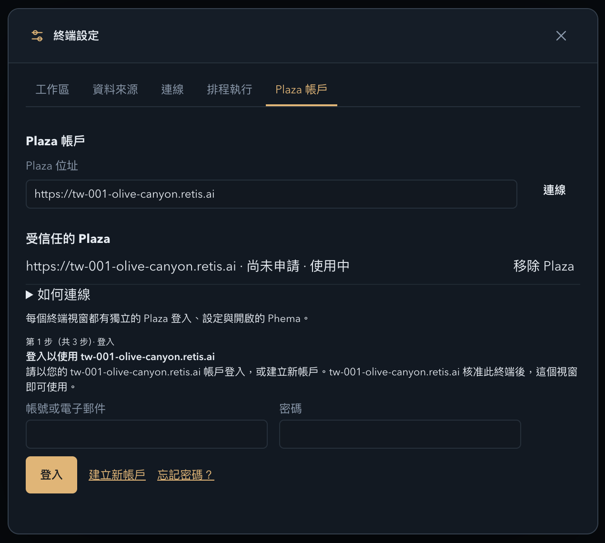
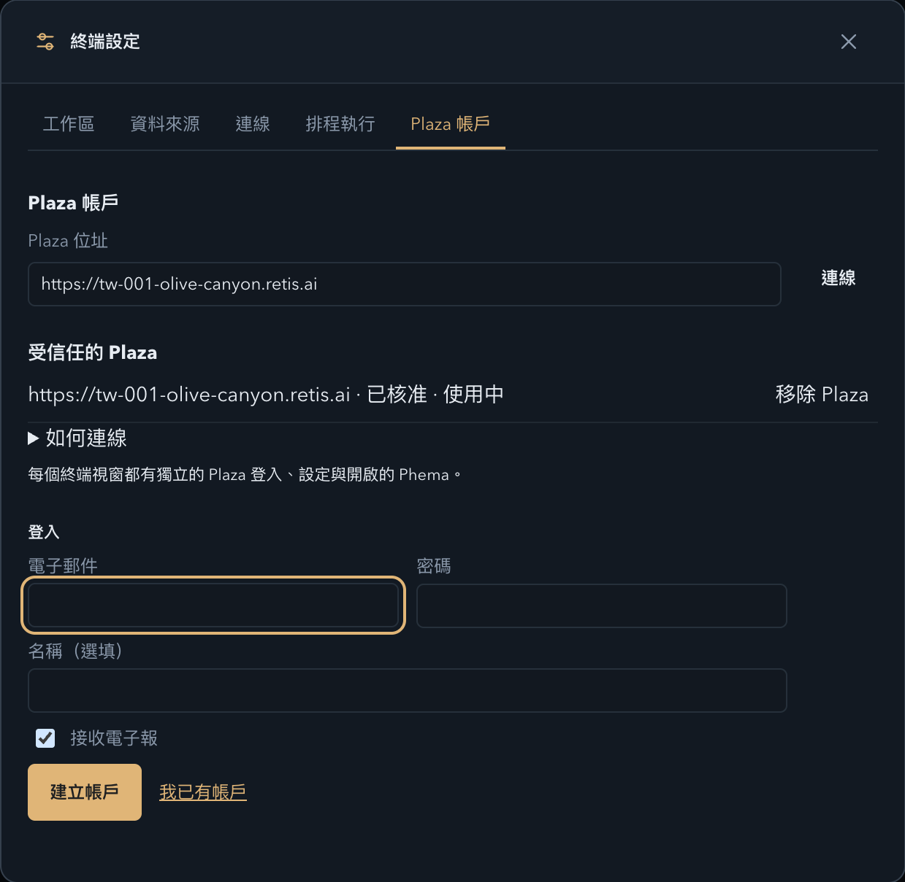
左：登入。右：按「建立新帳戶」後的表單。
- 第一次登入後，畫面會自動開好。Retis Terminal 會建立「新手入門」工作區，先開「台灣半導體觀察」，再開「策略監看」（可能要等一分鐘左右）。接著請照下方步驟安裝本機 yfinance。
- 點數。新帳號一開始有 1,000 點，每月 1 日（台灣時間）補足到 1,000 點。點數沒有現金價值，測試期間免費。看報價、新聞與更新價格都不扣點，哪些操作會扣點請看 附錄 A。
之後再打開：雙擊 Retis Terminal（或圖示 → 開啟），會回到您上次的工作區，不需要再登入。
安裝本機 yfinance 與本機 OpenStreetMap
走勢圖、新聞、公司資料，以及策略監看的價格與回測，都需要歷史價格，通常由「本機 yfinance」在您自己的電腦上取得。它是 Retis Terminal 附的小元件，由 Retis MAS 管理員 安裝與啟動，免費，也不扣點。還沒安裝時，走勢圖會顯示「沒有可供您使用的歷史價格來源。請在 Retis MAS 管理員安裝「本機 yfinance」…」，新聞也會請您安裝。
同一個 Retis MAS 管理員也提供「本機 OpenStreetMap」（選用），為地球檢視提供免費的 OpenStreetMap 標準地圖與 OpenTopoMap 地形圖，不需要金鑰，也不扣點。建議兩個一起安裝：先裝本機 yfinance（步驟 1–5），再裝本機 OpenStreetMap（步驟 6–7）。
不一定要安裝：走勢圖、新聞與回測可以使用任何提供這些資料的資料來源。如果您已經有其他資料來源（在 終端設定 → 資料來源 加入您自己的金鑰，見 第 4 節），可以不安裝本機 yfinance。
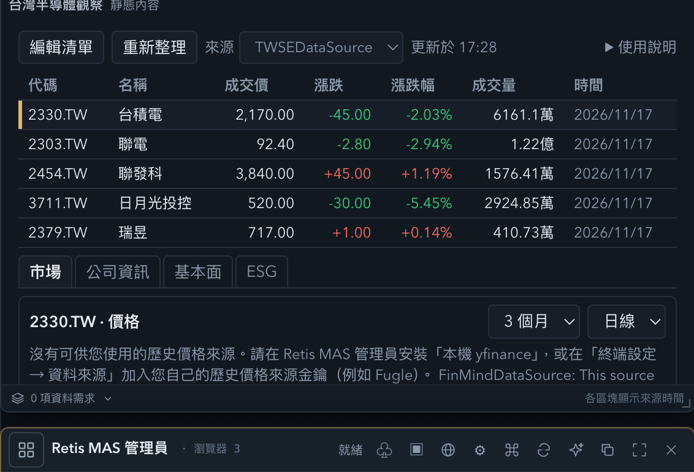
- 在側邊欄按 新增資料瀏覽器。「Phema 版面」視窗的 這台電腦 下有 Retis MAS Manager，選它，再按 開啟 Retis MAS Manager。開啟後資料瀏覽器的標題是「Retis MAS 管理員」。
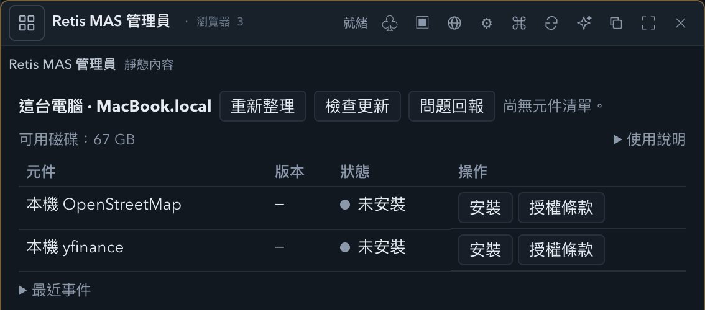
- 在 本機 yfinance 那一列按 安裝。畫面會先顯示「Yahoo 財經資料與 yfinance」的說明，以及要下載的程式庫清單（按 授權條款 可看各程式庫的授權）。看完後按 同意並安裝。
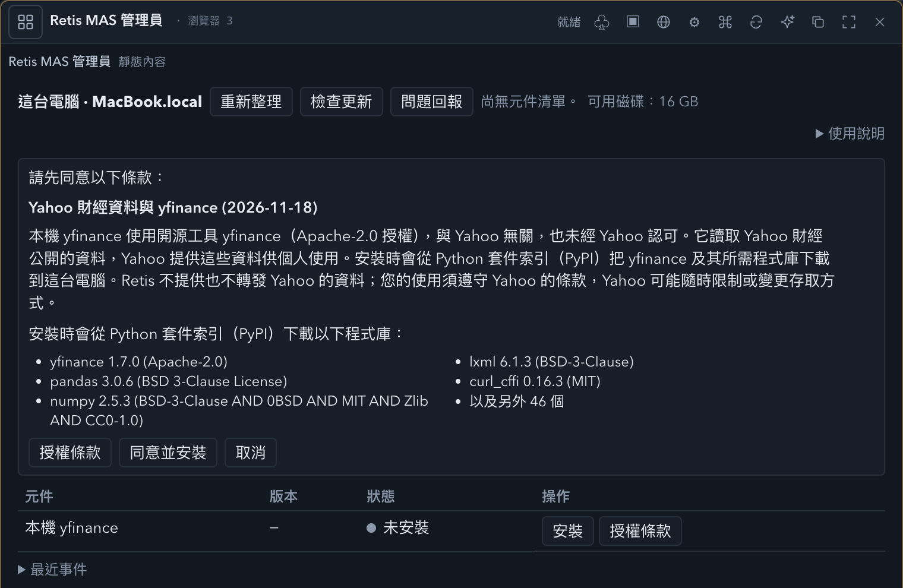
- Retis MAS 管理員會從 Python 套件索引（PyPI）下載 yfinance 與它需要的程式庫，約 50 MB，裝好後約佔 200 MB；不會從 Retis 下載。約半分鐘後，狀態變成 執行中。Windows 若詢問是否允許程式使用網路，請允許。
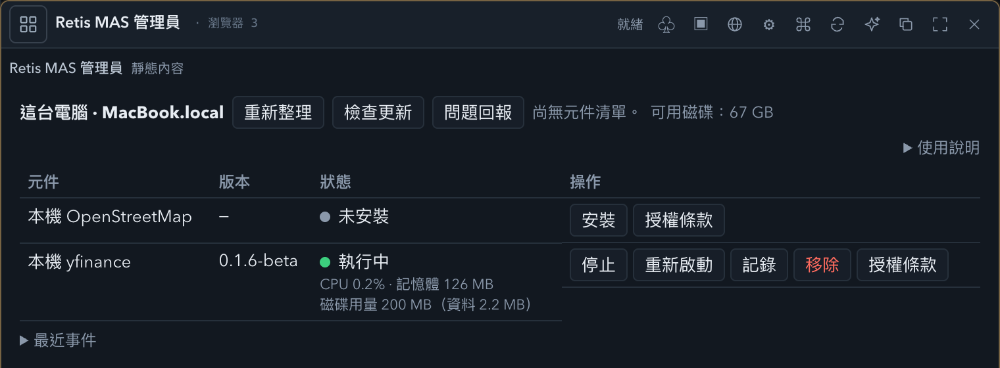
- 開啟 終端設定 → 連線，這台電腦 會列出「Local yfinance · data-source · 執行中」。資料來源 分頁也會出現 Local yfinance（公開資料 · 無需金鑰）。
- 如果台灣半導體觀察的走勢圖或新聞仍顯示沒有來源，按該資料瀏覽器標題列的重新載入（↻）。
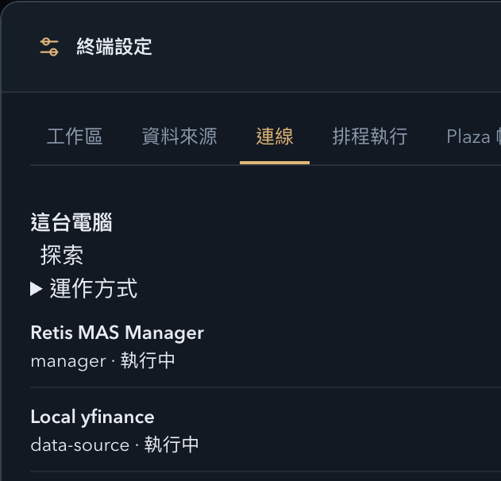
- （選用）在同一個 Retis MAS 管理員的 本機 OpenStreetMap 那一列按 安裝。畫面會先顯示「OpenStreetMap 圖磚與其使用政策」的說明與要下載的程式庫清單，看完後按 同意並安裝。它需要的程式庫比本機 yfinance 少，裝好後約佔 60 MB；約半分鐘後狀態變成 執行中。
- 終端設定 → 連線 的 這台電腦 會再列出「Local OpenStreetMap · data-source · 執行中」。怎麼在地球檢視使用它，見 第 8 節。
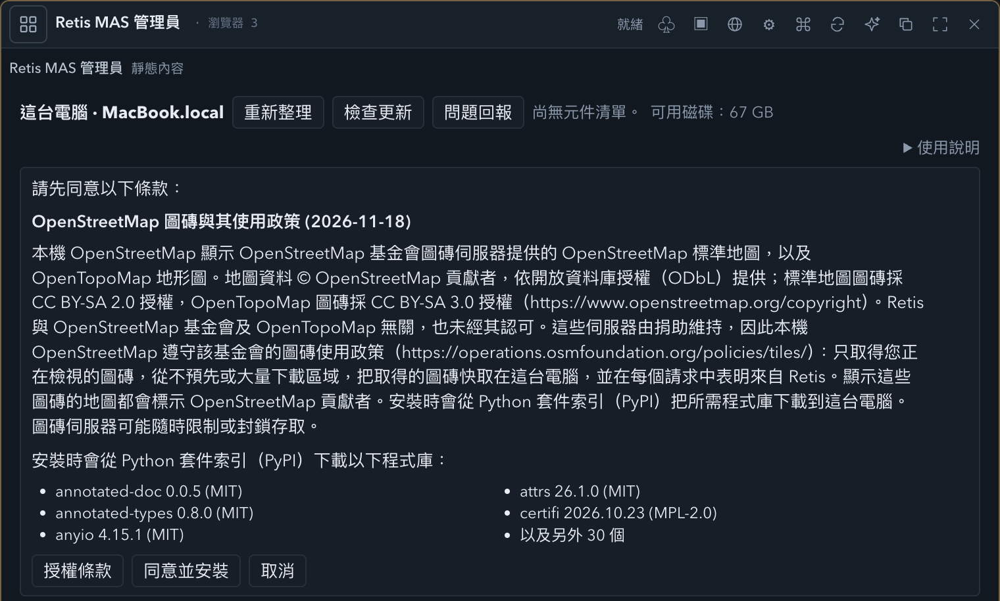
- 本機 yfinance 與本機 OpenStreetMap 只在這台電腦上執行。它們只接受這台電腦的連線，不需要登入或配對。Retis MAS 管理員會在您登入電腦時自動啟動它們；關掉 Retis Terminal 的瀏覽器分頁或按 結束，它們都會繼續執行。要停止，在 Retis MAS 管理員的那一列按 停止。
- 不能安裝時：這兩個元件在 Intel 晶片的 Mac 目前都沒有可用的版本（那一列會顯示「此電腦無可用版本」），iPhone、iPad 或不能安裝程式的電腦也無法使用。這時請在 終端設定 → 資料來源 加入您自己提供歷史價格的金鑰，例如富果（見 第 4 節）。
- 關於 Yahoo 的資料：yfinance 是開源工具，與 Yahoo 無關，也未經 Yahoo 認可。它讀取 Yahoo 財經公開的資料，這些資料供個人使用，請遵守 Yahoo 的條款。
- 關於 OpenStreetMap 的圖磚：本機 OpenStreetMap 遵守 OpenStreetMap 基金會的圖磚使用政策：只取得您正在看的圖磚，不會預先或大量下載，取得的圖磚會快取在這台電腦。地圖資料 © OpenStreetMap 貢獻者（ODbL）。
3. 認識畫面與開啟 Phema
第一次登入後的畫面如下。左邊是側邊欄，右邊是開著的「資料瀏覽器」，每個資料瀏覽器顯示一個 Phema。
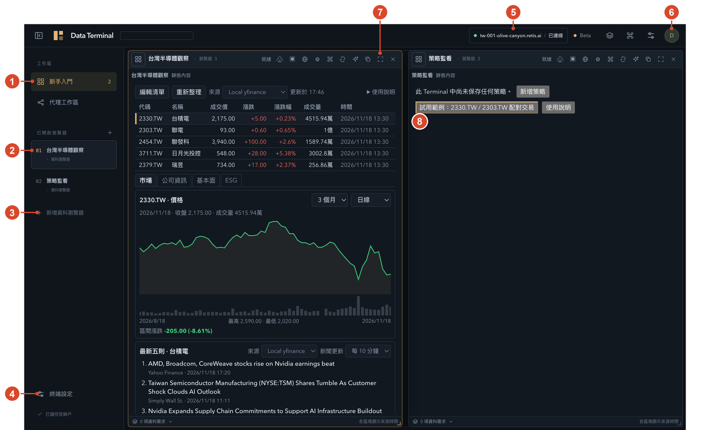
- 工作區：目前的工作區（新手入門），數字是開著的資料瀏覽器數量。工作區與版面會自動保存。
- 已開啟瀏覽器：點一下就切換到那個資料瀏覽器。
- 新增資料瀏覽器：開啟其他 Phema（見下方）。
- 終端設定：語言、資料來源與金鑰、連線（這台電腦上的元件）、Plaza 帳戶與點數。
- 連線狀態：顯示「tw-001-olive-canyon.retis.ai / 已連線」就是正常。
- Plaza 帳戶：您的帳戶圖示，可登出或查看帳戶。
- 資料瀏覽器的標題列：右邊的按鈕可重新載入（↻）、聚焦（⛶，放大成整個畫面，下方會出現各瀏覽器的分頁）或關閉（×）。拖曳標題列可移動，拖曳邊緣可調整大小。
- 試用範例：策略監看裡的一鍵範例，見 第 7 節。
開啟 Phema
- 在側邊欄按 新增資料瀏覽器，會打開「Phema 版面」視窗：這台電腦 下是您電腦上的 Retis MAS Manager，目錄 下是 tw-001 提供的 4 個 Phema。
- 點選一個，右邊會顯示說明。來源模式 保持 參數（即時取得資料）。若選 快照，則是開啟先前保存、不會再更新的內容，可先按 檢視內容 看看。
- 開啟版面配置於 選 新增資料瀏覽器（另開一個）或 目前資料瀏覽器（取代目前這個），再按 開啟 <名稱>。
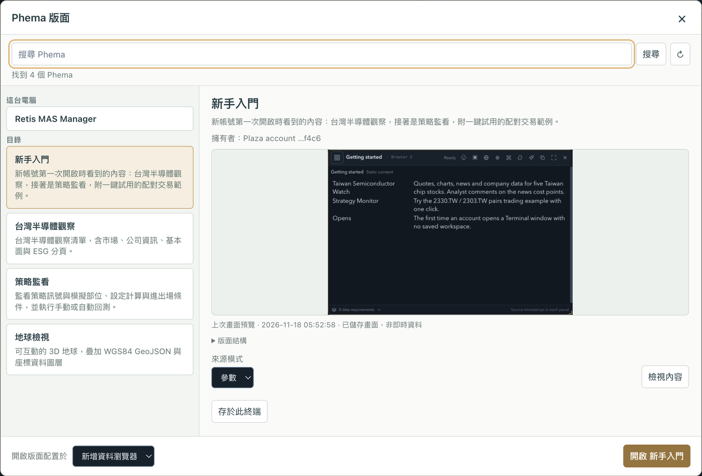
| Phema | 用途 | 需要金鑰？ | 點數 |
|---|
| 新手入門 | 新帳號第一次開啟時的內容清單：先開台灣半導體觀察，再開策略監看。 | 不需要 | 0 |
| 台灣半導體觀察 | 五檔台灣半導體股票的報價、走勢圖、新聞、公司資料與基本面；可請分析師評論新聞。 | 不需要；走勢圖與新聞使用本機 yfinance，或其他提供這些資料的資料來源 | 看資料 0；分析師評論每次 3–4 點 |
| 策略監看 | 建立交易策略、看即時訊號、回測，並用模擬帳戶練習。 | 不需要；價格與回測用本機 yfinance，有富果金鑰可改用富果 | 建立、更新 0；回測 5；執行中每一步 10 |
| 地球檢視 | 3D 地球或平面地圖，疊加各國數值、地震、空氣品質與地圖圖磚等圖層。 | 各國數值不需要；地圖圖磚、地震與空氣品質需要 | 0 |
4. 設定您自己的金鑰（選用）
不設定金鑰也能使用大部分功能：報價來自台灣證交所（TWSE）與櫃買中心（TPEx），歷史價格與新聞來自您電腦上的本機 yfinance（見 第 2 節）。如果您有自己的資料商金鑰，可以在 終端設定 → 資料來源 加入，Retis Terminal 會用您的金鑰直接向資料商取得資料。
- 開啟左下角 終端設定，選 資料來源 分頁。清單列出您可以使用的資料來源，包括您電腦上的 Local yfinance 與 Local OpenStreetMap。
- 標示「公開資料 · 無需金鑰」的可以直接使用。
- 標示「使用我的金鑰」的需要您自己的金鑰。還沒設定時右邊顯示「無法存取」。
- 點該資料來源那一列（例如 FugleDataSource），展開 進階：手動 API 金鑰連線，在 API 金鑰 貼上您的金鑰，按 儲存來源設定。
- 儲存後會顯示「已存金鑰：…」（只顯示部分字元），以及「僅傳送至 api.fugle.tw」這類的主機名稱。Retis Terminal 只會把金鑰送到這裡列出的主機；日後資料商若改用其他主機，畫面會請您重新儲存金鑰。
- 要移除金鑰時，勾選 移除已存金鑰，再按 儲存來源設定。
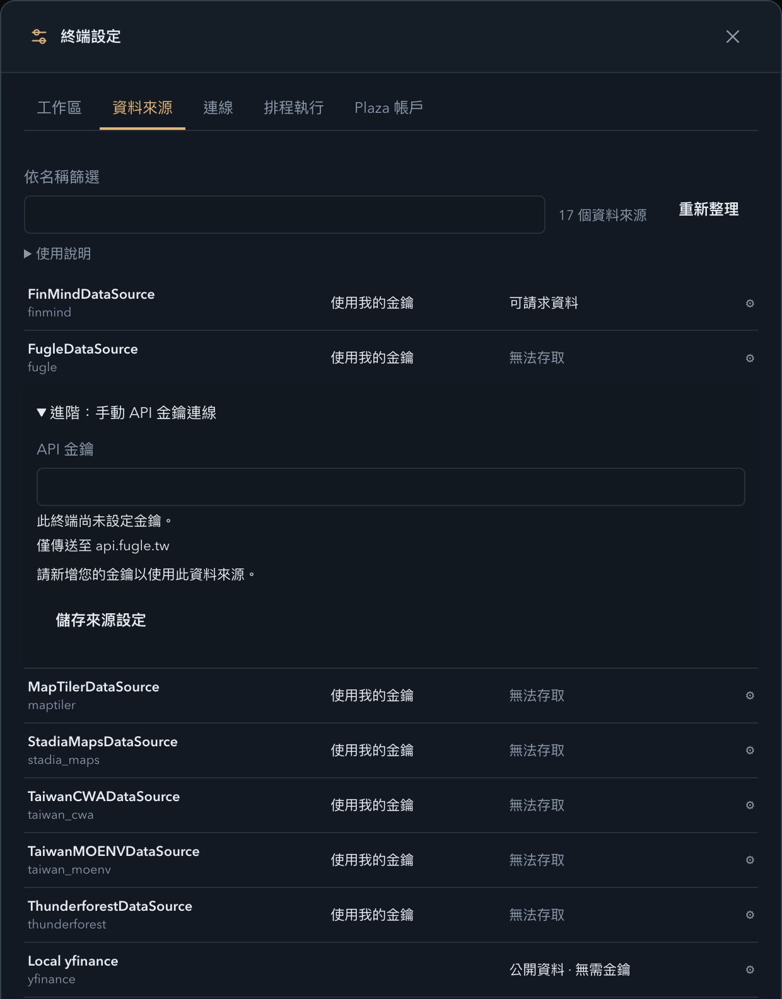
| 資料來源（清單上的名稱） | 用在哪裡 |
|---|
| Local yfinance（本機 yfinance，公開資料 · 無需金鑰） | 台灣半導體觀察的報價、走勢圖、新聞、公司資料與基本面；策略監看的價格與回測。在您的電腦上執行，見 第 2 節。 |
| Local OpenStreetMap（本機 OpenStreetMap，無需金鑰） | 地球檢視的 OpenStreetMap 標準地圖與 OpenTopoMap 地形圖。在您的電腦上執行，見 第 2 節。 |
| FugleDataSource（富果行情 API） | 台灣半導體觀察的報價、走勢圖與公司資料；策略監看的價格來源與回測，包括台指期、股票期貨等（例如 CDF.TAIFEX，台積電期貨近月連續）。不能安裝本機 yfinance 的電腦可改用富果。取得金鑰：富果行情 API 方案（合作推廣連結）。 |
| 其他資料來源（例如 Bloomberg、LSEG、Alpha Vantage、FinMind 等） | 不只富果：任何提供 API 的資料來源，或像 yfinance 這樣安裝在您電腦上的套件，都可以接上 Retis Terminal。您要的資料來源請寫信到 datasources@retis.ai（見下方）。 |
| StadiaMapsDataSource、MapTilerDataSource、ThunderforestDataSource | 地球檢視的地圖圖磚（街道圖、地形圖等）。在 Retis 使用需要該供應商的付費方案，見 第 8 節。 |
| TaiwanCWADataSource（中央氣象署） | 地球檢視的地震與測站氣溫圖層。需要中央氣象署的授權碼。 |
| TaiwanMOENVDataSource（環境部） | 地球檢視的空氣品質圖層。需要環境部的 API 金鑰。 |
| LLM 金鑰：Anthropic、OpenAI（清單最下方） | 台灣半導體觀察的分析師評論改用您自己的金鑰撰寫，扣的點數較少。 |
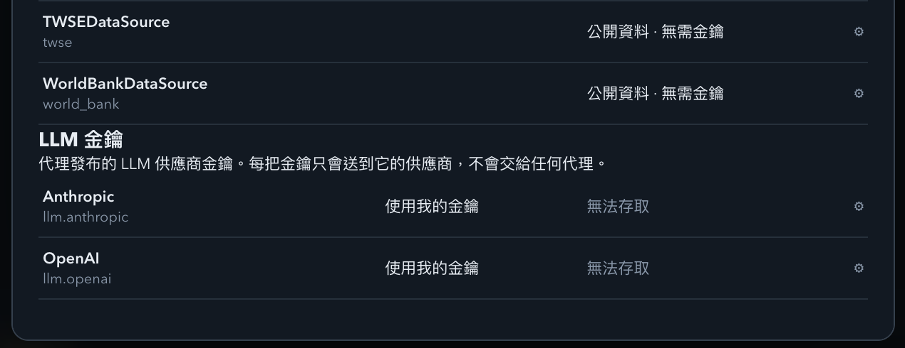
需要其他資料來源？您可以要求加入任何資料來源，例如 Bloomberg、LSEG、Alpha Vantage、FinMind 等有 API 的資料商，或像 yfinance 這樣在您電腦上安裝的套件。如果您要的資料來源不在 終端設定 → 資料來源 的清單裡，請寫信到 datasources@retis.ai，寫下資料商名稱與您需要的資料（例如市場、商品或欄位）。請不要在信中附上金鑰。
金鑰的保存方式：「您的金鑰保留在此終端，只會傳送至供應商 API，代理程式永遠不會收到。」用您自己的金鑰取得的資料，是您與資料商之間的用量，不經過 Retis，也不扣 Retis 的點數。
每個 Retis Terminal 視窗有自己的登入與設定。若您在瀏覽器另開了一個 Retis Terminal 分頁，那個分頁會顯示「此來源的金鑰已儲存在您的另一個終端視窗」。請切回原分頁，或在新分頁再輸入一次。
5. 新手入門
用途：新手入門決定新帳號第一次開啟時看到什麼。Retis Terminal 視窗還沒有儲存的工作區時，會依照它的清單先開「台灣半導體觀察」，再開「策略監看」。您不需要操作它，它也不扣點。
開啟：第一次登入時自動使用。想看它的內容，可按 新增資料瀏覽器 → 新手入門 → 開啟 新手入門。單獨開啟時，它只顯示一張三列的說明：
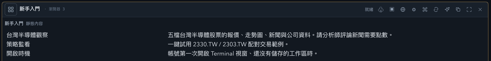
| 列 | 意思 |
|---|
| 台灣半導體觀察 | 五檔台灣半導體股票的報價、走勢圖、新聞與公司資料。請分析師評論新聞需要點數。見 第 6 節。 |
| 策略監看 | 一鍵試用 2330.TW / 2303.TW 配對交易範例。見 第 7 節。 |
| 開啟時機 | 帳號第一次開啟 Terminal 視窗、還沒有儲存的工作區時。 |
如果您關掉了台灣半導體觀察或策略監看，隨時可以從 新增資料瀏覽器 再開一次。
6. 台灣半導體觀察
用途：一次看五檔台灣半導體股票：台積電（2330.TW）、聯電（2303.TW）、聯發科（2454.TW）、日月光投控（3711.TW）與瑞昱（2379.TW）。可以看報價、走勢圖、最新新聞、公司資料與基本面，也可以請分析師評論新聞。看資料不扣點，只有請分析師評論會用點數。
開啟：第一次登入時自動開啟；或按 新增資料瀏覽器 → 台灣半導體觀察。開著的時候，報價每 2 分鐘自動更新一次。
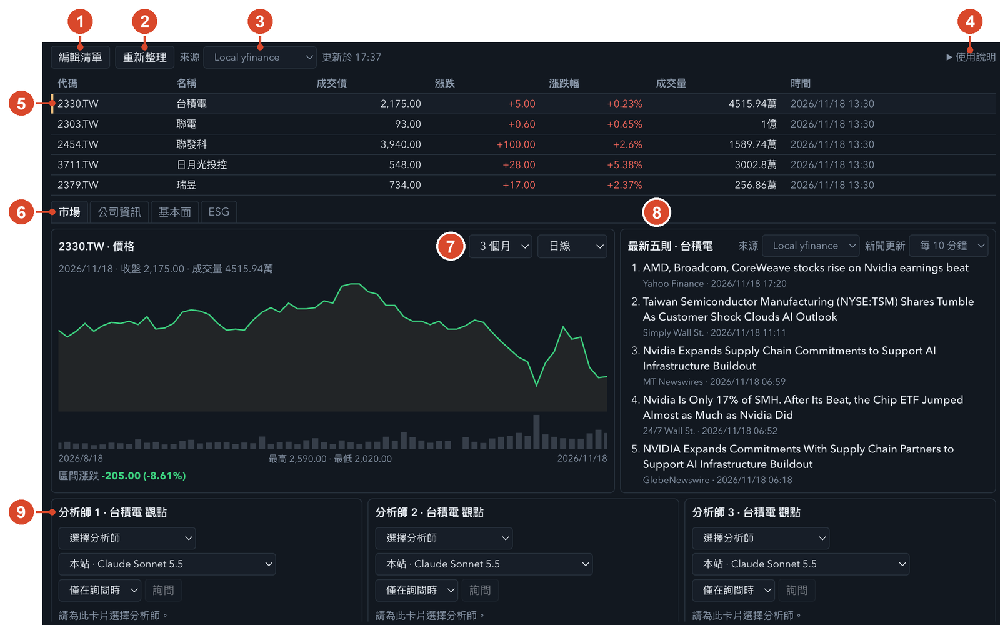
- 編輯清單：改變觀察的股票。輸入 1 至 12 個代碼，以逗號分隔（例如
2330.TW, 6488.TWO，上市用 .TW、上櫃用 .TWO），按 套用。恢復預設 回到原本五檔，取消 不變更。
- 重新整理：立刻重新取得全部內容。旁邊的「更新於」是上次更新的時間。
- 來源：報價的資料來源：TWSEDataSource（證交所）、TPExDataSource（櫃買中心）或 Local yfinance（本機 yfinance）。儲存富果金鑰後會多出富果。
- 使用說明：展開畫面內建的說明。
- 觀察清單：代碼、名稱、成交價、漲跌、漲跌幅、成交量與報價時間。點一列，下方的圖表、新聞與公司資料就換成那一檔。
- 分頁：市場、公司資訊、基本面、ESG（見下方）。
- 區間與週期：區間可選 5 天、1 個月、3 個月、6 個月、1 年；週期可選分線、日線、週線、月線。把游標移到圖上可看當天的收盤與成交量，圖下方是區間最高、最低與區間漲跌。
- 最新五則：這一檔的最新新聞（多為英文），來源是本機 yfinance。新聞更新 可選僅手動，或每 1、5、10、15、30、60 分鐘。台積電、聯電與日月光投控的新聞也包含它們的美國掛牌（TSM、UMC、ASX）。
- 分析師卡片：請分析師就畫面上的新聞發表看法（見下方）。
公司資訊、基本面與 ESG
- 公司資訊：選中那一檔的名稱、中文名稱、英文名稱、產業類別、產業、國家、網站、幣別與簡介。
- 基本面：清單上所有股票的市值、每股盈餘（近四季）、本益比、股價淨值比、殖利率、52 週最低與最高，方便互相比較。
- ESG：tw-001 目前沒有提供 ESG 資料的來源，這個分頁會顯示「本站沒有可供您使用的來源提供 ESG 資料」。
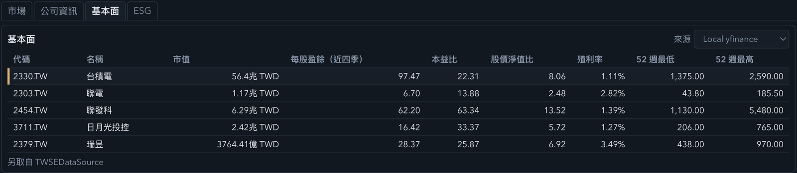
請分析師評論
市場分頁下方有三張分析師卡片，每張可以請一位分析師評論目前顯示的新聞。分析師是虛構的研究角色，看法不是投資建議。
- 選擇分析師：清單旁會標示每次詢問的點數，例如「Cyrus Vale · 3 點」。按 ⓘ 可看點數明細。
- 撰寫模型：本站 · Claude Sonnet 5.5 使用 tw-001 的模型；若您在 終端設定 存了自己的 Anthropic 或 OpenAI 金鑰，可選「我的 … 金鑰」，扣的點數較少。
- 詢問時機：僅在詢問時（建議）、隨新聞更新，或 每 N 分鐘。後兩種會自動重複詢問，每次都會扣點。
- 按 詢問。約半分鐘到一分鐘後，卡片會顯示評論，最下方是時間與實際扣的點數，例如「23:31 詢問 · 3 點」。任何步驟失敗都不扣點。重新打開畫面時會保留上一則評論，不會重複扣點。
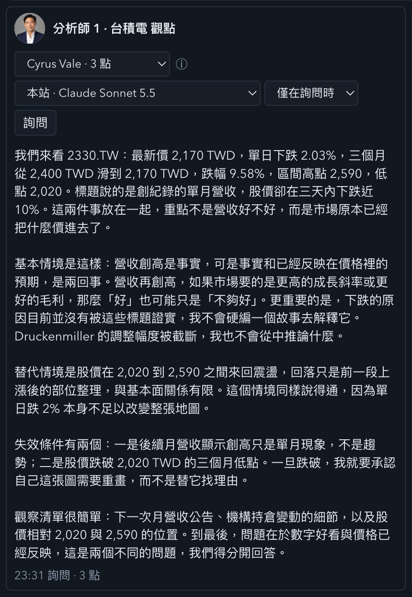
| 分析師 | 本站模型 | 用自己的 LLM 金鑰 |
|---|
| Cyrus Vale、Mara Whitestone、Selene Cross | 3 點 | 1 點 |
| Naomi Takahashi | 4 點 | 2 點 |
7. 策略監看
用途：建立交易策略、看即時進出場訊號、用過去的價格回測，並用模擬帳戶練習下單與平倉。只做模擬交易，不會真的下單。
開啟：第一次登入時自動開啟；或按 新增資料瀏覽器 → 策略監看。
策略手冊：每個策略範本的原理、參數與回測範例，以及配對交易的完整設定，請看《Retis Terminal 策略監看手冊》。本章只介紹基本操作。
配對交易是什麼？
配對交易同時看兩檔平常一起漲跌的股票，例如台積電（2330.TW）與聯電（2303.TW）。兩檔的價差偶爾會拉開又收回：價差比平常小很多時進場，買進主要股票、賣出參考股票；價差回到平常時兩檔一起出場。
- 避險價差：主要股票價格 − 訊號避險比率 × 參考股票價格。
- 價差 Z 分數：目前的價差和最近一段期間（預設 20 根 K 棒）的平均相比，偏離了幾個標準差。數字越低，價差越不尋常地小。
- 進場 Z 分數、出場 Z 分數：Z 分數小於或等於進場值（預設 −2）就發出進場訊號，大於或等於出場值（預設 0）就發出出場訊號。
7.1 試用範例
- 第一次打開時畫面是空的，按 試用範例：2330.TW / 2303.TW 配對交易。它會建立一個現成的配對策略，價格來自您電腦上的本機 yfinance（免費）。
- 按 重新整理，「監看」分頁就會顯示兩檔的最新價格；若仍是「—」，稍等幾秒再按一次。建立範例與更新價格都不扣點。
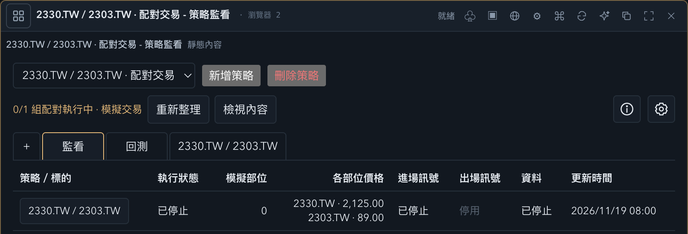
上方由左到右是：策略清單、新增策略、刪除策略，下一列是執行狀態（例如「0/1 組配對執行中 · 模擬交易」）、重新整理、檢視內容（看已儲存的策略定義），以及右邊的 ⓘ 使用說明 與 ⚙ 策略設定。分頁有：
- +：新增一組配對（沿用目前設定，並保持停止）。
- 監看：一覽所有配對的執行狀態、模擬部位、各部位價格、進出場訊號、資料狀態與更新時間。
- 回測：用過去的價格模擬（見 7.5）。
- 每組配對一個分頁（例如 2330.TW / 2303.TW）：啟動、停止、看訊號與模擬下單（見 7.2）。
策略保存在 Retis Terminal 的這個視窗中，關閉視窗就會移除這些策略。在瀏覽器另開的 Retis Terminal 分頁是另一個視窗，看不到這些策略。
7.2 啟動、訊號與模擬下單
點配對的分頁，按 啟動。策略會定時取得新價格並重算訊號，預設約每 2 分鐘一次。
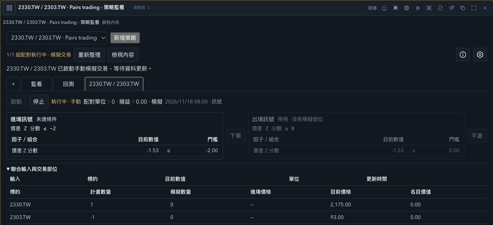
- 進場訊號 / 出場訊號：上方是規則（例如「價差 Z 分數 ≤ −2」），下方是 目前數值 與 門檻。上圖的 Z 分數是 −1.53，還沒低於 −2，所以顯示「未達條件」。
- 聯合輸入與交易部位：兩檔的目前價格、計畫數量（主要 1、參考 −1）、模擬數量、進場價格與名目價值；下方的計算表列出主要加權值、參考加權值、避險價差、價差 Z 分數與模擬部位損益。
- 下單：只有在執行中、沒有模擬部位、資料是最新的、而且進場條件成立時才能按。策略不會自己下單，按 下單 會打開模擬委託單，可以修改 模擬委託價格 與 模擬委託數量，再按 送出模擬委託。
- 平倉：有模擬部位時可按，同樣會打開模擬委託單。
- 停止：停止執行，模擬部位會保留。
點數：執行中每一步 10 點，約每 2 分鐘一步，一小時約 300 點；下單 與 平倉 每次也是 10 點。停止 不扣點。1,000 點大約可以連續執行 3 小時。關掉畫面不會停止執行，不用時請按 停止。點數用完時執行會暫停，下個月 1 日補足後即可繼續。
7.3 新增策略與策略範本
按 新增策略，選 範本，填 主要股票（配對交易還要填 參考股票），選 價格來源，再按 建立。名稱 可以不填，系統會用代碼與範本名稱命名（例如「2330.TW / 2303.TW · 配對交易」）。建立策略不扣點。
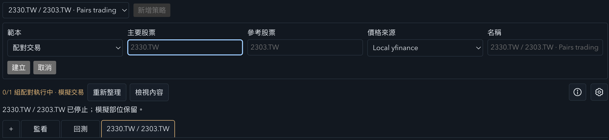
- 代碼：上市股票用
.TW（例如 2330.TW），上櫃股票用 .TWO（例如 6488.TWO）。
- 價格來源：預設是 Local yfinance（本機 yfinance，免費）。在 終端設定 → 資料來源 存了富果金鑰後，同一個視窗會出現 FugleDataSource；若沒看到，請重新開啟策略監看。
| 範本 | 預設參數 | 進場 / 出場規則 |
|---|
| 移動平均線交叉 | 快速 EMA 20、慢速 EMA 50 | 快線由下往上穿越慢線進場，由上往下穿越出場。 |
| 動能 | 期數 20、進場報酬率 0、出場報酬率 0 | 收盤價 ÷ 20 根 K 棒前的收盤價 − 1 大於進場值進場，小於或等於出場值出場。 |
| 通道突破 | 進場通道 20、出場通道 10 | 收盤價高於前 20 根的最高收盤價進場，低於前 10 根的最低收盤價出場。 |
| RSI 均值回歸 | 期數 14、進場 30、出場 70 | RSI 由下往上穿越 30 進場，到 70 以上出場。 |
| 布林通道均值回歸 | 期數 20、標準差倍數 2 | 收盤價由下往上穿越下軌進場，回到中線以上出場。 |
| 波動收斂突破 | 期數 20、標準差倍數 2、最大通道寬度 0.05 | 前一根的通道寬度小於 0.05，且收盤價向上穿越前一根的上軌時進場；跌破中線出場。 |
| VWAP 交易 | 時區 UTC、交易時段開始 00:00 | 價格向上穿越當日 VWAP 進場，向下穿越出場。適合日內 K 棒。 |
| 配對交易 | 計算期數 20、進場 Z 分數 −2、出場 Z 分數 0、訊號避險比率 1 | 價差 Z 分數 ≤ −2 時買進主要股票、賣出參考股票；Z 分數 ≥ 0 時兩檔一起出場。 |
所有範本都只做多（配對交易是做多主要股票、做空參考股票）。
刪除策略：在策略清單選要刪除的策略，按旁邊的 刪除策略，清單下方出現確認問題時按 刪除（不刪就按 取消）。它的配對、模擬交易、回測設定與已儲存的回測會一併刪除，無法復原。
7.4 策略設定
按右上角的 ⚙ 策略設定。要改參數，最簡單的方法是：
- 在 從策略產生器載入設定 選範本（例如 配對交易），下方會出現 範本參數。
- 填好參數。配對交易的 參考股票 必須填寫，而且不能和主要股票相同；進場 Z 分數必須小於出場 Z 分數。
- 按 載入設定，檢查下方的欄位與訊號，再按 套用設定。若策略正在執行或有模擬部位，按鈕會變成「清除部位並套用設定」，並讓您選擇以目前價格平倉或清除模擬。
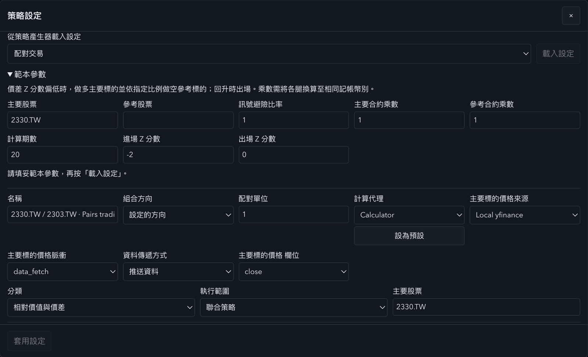
- 訊號避險比率：預設 1。兩檔價格差很多時（例如 2330 約 2,175 元、2303 約 93 元），可以設成約「主要股票價格 ÷ 參考股票價格」（這個例子約 23），讓價差較能反映兩檔的相對變化。
- 計算期數：算平均與標準差用的 K 棒數，預設 20。
- 交易部位與損益計算：可以加入 每成交單位費用 與 滑價（基點）。預設兩者都是 0。
7.5 回測
回測用過去的價格重跑策略，看它過去會怎麼進出場。每次回測 5 點（手動或自動）。
- 開啟 回測 分頁，選 手動。在 測試設定 確認交易腿：主要股票數量 1，參考股票的數量會依 數量配置 自動算出。
- 依進場價格平衡部位（預設）：參考股票的數量讓兩邊的金額大致相等。
- 固定數量：自訂兩檔的數量。
- 測試期間 選 開始／結束。預設是最近 30 天，配對交易要先累積 20 根 K 棒，期間太短可能沒有交易，建議改成最近 6 個月。Tick／K 棒間隔 用
1d（日 K）。
- 歷史來源 預設是「Local yfinance · data_fetch · 免費」，有富果金鑰可改選富果（標示「你的金鑰」）。旁邊的欄位預設是
adjustedClose（還原收盤價），可避免除權息造成的價格跳動；股票對期貨的配對預設是 close（見 7.6）。按 執行回測，約十幾秒後出現結果。
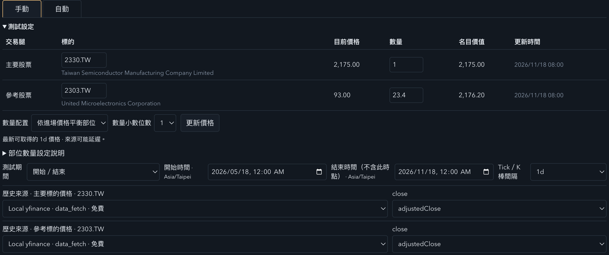
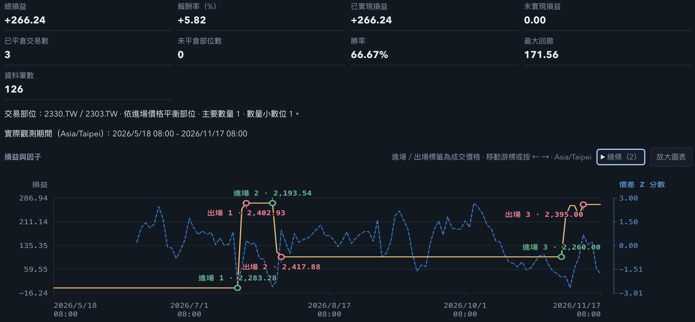
2330.TW / 2303.TW 最近 6 個月（日 K、還原收盤價、本機 yfinance）的回測結果，「線條」選單加選了價差 Z 分數。這只是示範，不代表未來表現。
| 結果 | 意思 |
|---|
| 總損益 | 已實現損益加未實現損益，單位是價格單位（台股為新台幣）。 |
| 報酬率（%） | 總損益相對於進場金額的百分比。 |
| 已實現損益 / 未實現損益 | 已平倉交易的損益 / 期間結束時還沒平倉的部位，以最後價格估值。 |
| 已平倉交易數、未平倉部位數 | 期間內完成的進出場次數，以及結束時還開著的部位。 |
| 勝率 | 已平倉交易中賺錢的比例。 |
| 最大回撤 | 累計損益從高點往下跌的最大幅度。 |
| 資料筆數 | 用到的 K 棒數。 |
- 圖表：「累計損益」圖上的綠色與紅色標記是進場與出場，標籤是成交價格。按 線條 可加選價差 Z 分數、避險價差、兩檔價格等；放大圖表 可看大圖。下方的「配對價格散佈圖」畫出兩檔價格的關係與迴歸線 ±2σ。
- 交易明細：圖表下方列出每一筆交易的進出場時間、價格、配對單位與損益。
- 儲存：按 儲存回測 保存在這個視窗（每個策略最多 20 份），之後從 已儲存的回測報告 重新開啟。沒有儲存的回測在離開分頁時會刪除。展開 報告內容與來源紀錄 可看每一筆價格的來源。
- 刪除已儲存的回測：在已儲存的回測報告清單選它，按 下載報告 旁的 刪除已儲存的回測，再按 刪除 確認。
- 保存空間：每個策略監看約可保存 40 到 50 個策略與它們的回測。用到約四分之三時會出現黃色提示；滿了時，新增策略、新增配對與 儲存回測 會告訴您，請先刪除不需要的策略或回測再試。
自動回測
選 自動：在 抽樣開始時間 與 抽樣結束時間（不含） 之間（預設最近一年），隨機抽取多段開始時間與長度各跑一次，看策略是不是只在某一段期間有效。隨機種子（選填） 填同一個數字，結果會完全相同；換一個數字，抽到的期間就不同。按 執行自動回測，同樣是 5 點。
回測的假設：以觸發訊號那根 K 棒的價格成交；不計手續費、證交稅與滑價（可在策略設定加入費用與滑價，但沒有稅的欄位）；單一股票每次進場 1 股。yfinance 的 1 分 K 只有最近 30 天，其他分鐘 K 只有最近 60 天。
7.6 用富果資料（選用）
在 終端設定 → 資料來源 存了富果金鑰後，新增策略 的價格來源與回測的歷史來源都可以選 FugleDataSource（標示「你的金鑰」）。富果的資料是您與富果之間的用量，不扣 Retis 的資料點數；策略本身的點數（回測 5、每一步 10）不變。還沒有富果金鑰，見 第 4 節。
- 富果一次查詢的期間少於 1 年，較長的回測期間 Retis Terminal 會自動分段查詢。
- 富果也提供期貨歷史資料，可以做股票對期貨的配對，例如主要股票
2330.TW、參考股票 CDF.TAIFEX（台積電期貨，近月連續；富果的期貨方案見 附錄 E）。現貨對期貨的配對，兩腿與回測的價格欄位預設都是 close，請保持這個設定：期貨沒有還原價，現股用還原價會讓價差因股利失真。近月連續序列在每月換月時會有價格跳動，可能影響價差、Z 分數與回測結果。
8. 地球檢視
用途：在 3D 地球或平面地圖上疊加資料圖層，例如各國的經濟數值、國界等地理圖徵、地震、空氣品質與地圖圖磚。地球檢視不扣點。
開啟：按 新增資料瀏覽器 → 地球檢視 → 開啟 地球檢視。一開始只有本機繪製的 Natural Earth 底圖。
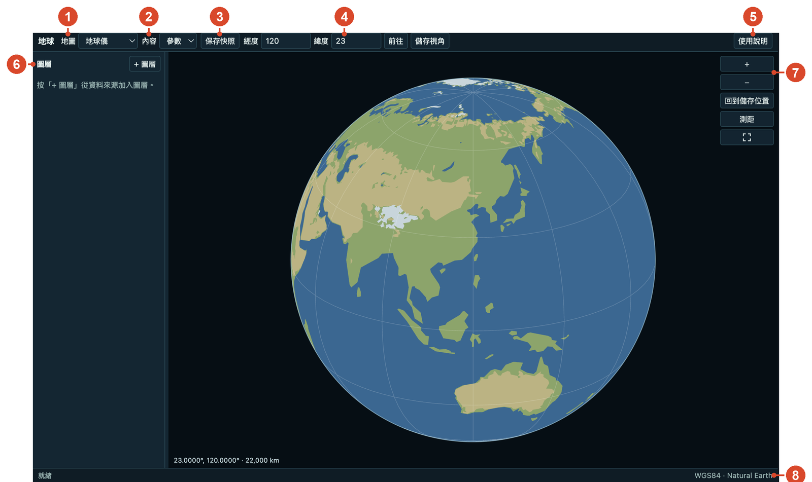
- 地圖：地球儀，或平面的等距圓柱、麥卡托、等面積地球、羅賓森、摩爾威德投影。拖曳可旋轉或平移。
- 內容：參數 是即時內容；快照 是先前保存的唯讀內容，選一個後按 檢視內容。
- 保存快照：把目前的圖層存成唯讀快照。
- 經度、緯度、前往、儲存視角：輸入經緯度後按 前往；儲存視角 記住目前的位置。
- 使用說明：畫面內建的說明。
- 圖層：按 + 圖層 從資料來源加入圖層（見下方）。
- 地圖按鈕：放大（+）、縮小（−）、回到儲存位置、測距（在地圖上拖曳量距離，按 Esc 結束），以及放大地圖（四角箭頭）。
- 出處標示：右下角顯示目前顯示中的圖磚圖層的來源與著作權標示；沒有圖磚圖層時顯示「WGS84 · Natural Earth」。
加入圖層
- 按 + 圖層，在 資料來源 選一個來源。清單的名稱多為英文，下方會顯示該來源的說明與這種圖層怎麼畫。
- 依來源填寫欄位（例如 指標、期間、資料集），再按 加入圖層。
| 清單上的名稱 | 畫出什麼 | 需要金鑰？ |
|---|
World Bank Indicators Data Source · Values by region
OECD Data Explorer Data Source · Values by region
IMF Data Source · Values by region | 每個國家一個數值（例如人口、GDP 成長率），依五分位由淺（最低）至深（最高）著色。 | 不需要 |
| Natural Earth · Features | 國界、海岸線等地理圖徵。 | 不需要 |
| Taiwan Weather (CWA) Data Source · Observations · Earthquakes / Station temperature | 中央氣象署的地震與測站氣溫。 | 需要中央氣象署授權碼 |
| Taiwan Environment (MOENV) Data Source · Observations | 環境部的空氣品質（AQI）。 | 需要環境部 API 金鑰 |
| Local OpenStreetMap · Map tiles · Standard / Topographic | OpenStreetMap 標準地圖與 OpenTopoMap 地形圖，畫在資料圖層下方。見 下方。 | 不需要（安裝本機 OpenStreetMap） |
| Stadia Maps / MapTiler / Thunderforest Data Source · Map tiles | 街道圖、地形圖、衛星影像等地圖圖磚，畫在資料圖層下方。 | 需要您的金鑰與付費方案 |
例如選 World Bank，指標 保留預設的 SP.POP.TOTL（人口），按 加入圖層，各國就會依人口多寡著色。下圖改用了羅賓森投影，並展開了圖層的詳細資訊。
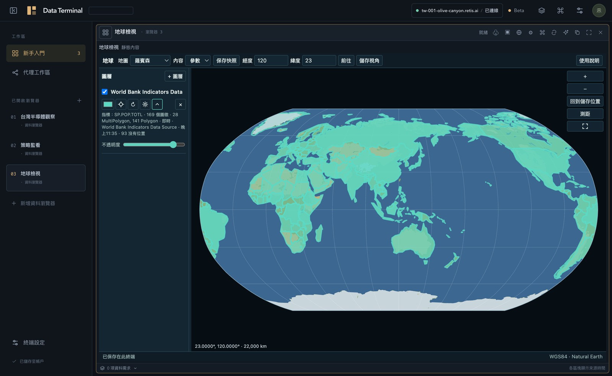
每個圖層一列：勾選框顯示或隱藏，接著是顏色、縮放至圖層、↻ 重新整理、⚙ 圖層設定（只顯示符合條件的圖徵、以某個屬性當標籤、標籤字型）、詳細資訊（含不透明度）與 × 移除。圖層與視角會保存在這個 Retis Terminal 裡（畫面顯示「已保存在此終端」）。
免費地圖：本機 OpenStreetMap 圖層
裝好本機 OpenStreetMap（見 第 2 節）後，地球檢視就能加入兩種免費地圖：Standard（OpenStreetMap 標準地圖：道路、地名與建築）與 Topographic（OpenTopoMap 地形圖：等高線與地形陰影）。不需要金鑰，也不扣點。
- 開啟地球檢視。在 經度 輸入
121.56、緯度 輸入 25.04，按 前往，再用地圖按鈕的放大（+）放大到看得到台北的街道。
- 按 + 圖層，資料來源 選 Local OpenStreetMap · Map tiles · Standard（資料集 會是 Street map），按 加入圖層。圖磚只在您看到的範圍載入，放大或移動時才取得新的圖磚；第一次看一個地方會慢一點，之後改從這台電腦的快取讀取。
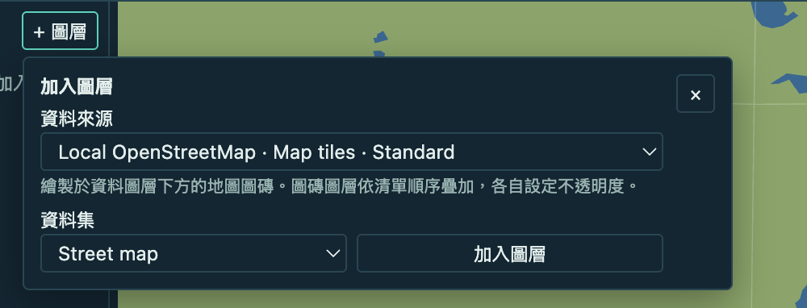
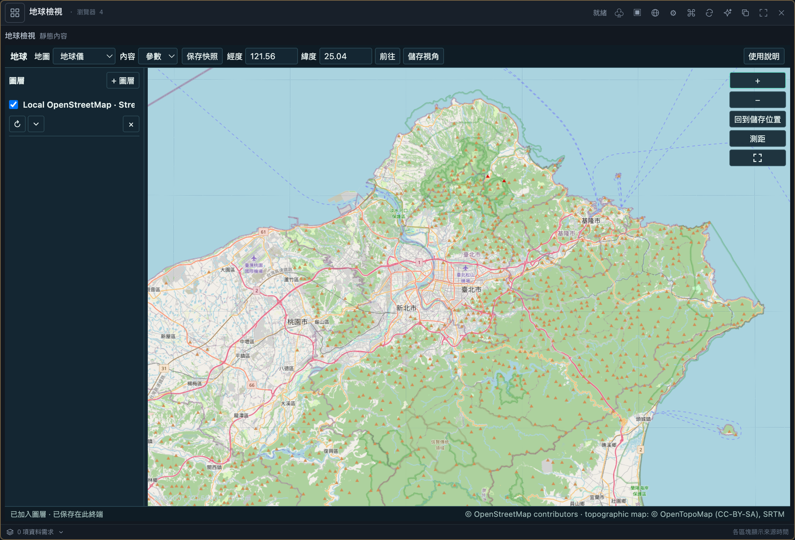
- 再按 + 圖層，資料來源 改選 Local OpenStreetMap · Map tiles · Topographic（資料集 Topographic map），按 加入圖層。移到山區最能看出差別，例如中央山脈（經度
121.0、緯度 23.5）。
- 調整疊放：圖磚圖層依清單順序疊放，都畫在資料圖層下方。展開一層的詳細資訊調整 不透明度，例如把其中一層調到一半，就能同時看到街道與地形；用勾選框隱藏或顯示一層。
- 疊加資料：例如再加入 World Bank 的人口圖層，各國的顏色會畫在地圖上方；看不清楚底下的地圖時，調低資料圖層的不透明度。
- 出處標示：右下角會列出 OpenStreetMap 貢獻者的標示（例如「© OpenStreetMap contributors」）。點它可以開啟 資料來源與授權，查看授權說明。
- 圖磚沒有出現時：確認 Retis MAS 管理員中本機 OpenStreetMap 是 執行中，再在該圖層按 ↻ 重新整理。不需要時按 × 移除圖層。圖層與視角會保存在這個 Retis Terminal 裡。
這些圖磚伺服器由捐助維持，請像平常一樣瀏覽，不要長時間快速拖曳或反覆大幅縮放。
其他地圖圖磚：需要您的金鑰與付費方案
Stadia Maps、MapTiler 與 Thunderforest 的圖磚只能用您自己的金鑰讀取，由您的 Retis Terminal 直接向供應商取得。這三家的免費方案限非商業使用，在 Retis 使用需要該供應商的付費方案，請先看清楚各家的方案與條款。
- Stadia Maps：Smooth、Smooth dark、Bright、Outdoors、Terrain、Toner。
- MapTiler：Streets、Outdoor、Topographic、Basic、Satellite。
- Thunderforest：Cycle、Transport、Landscape、Outdoors、Atlas、Neighbourhood。
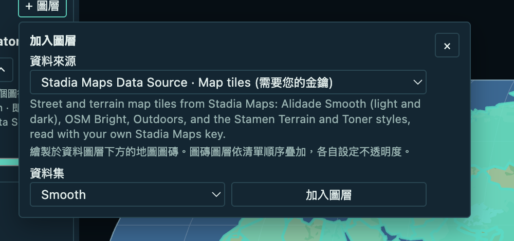
沒有存金鑰時，清單上會標示「（需要您的金鑰）」，按 加入圖層 會出現下面的提示。到 終端設定 → 資料來源，在 StadiaMapsDataSource 等那一列存入金鑰後（見 第 4 節），再加入一次。
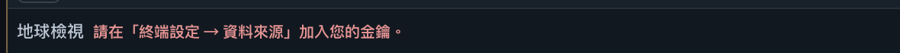
加入圖磚圖層後，右下角的出處標示會列出它的來源，例如「© Stadia Maps © OpenMapTiles © OpenStreetMap contributors」。圖磚依清單順序疊在資料圖層下方，每一層可以分別調整不透明度。
9. 用 AI 代理程式協助測試與回報（選用）
您可以讓 AI 代理程式（例如 Anthropic 的 Claude Code 或 OpenAI 的 Codex）連到 Retis Terminal 的公開儲存庫，幫您查文件、讀原始碼、整理測試紀錄，並草擬要回報的問題與討論。它們是在您電腦上執行的命令列工具，用的是您自己的帳號與 GitHub 身分；使用 Retis Terminal 不需要它們。
準備
- 安裝 Claude Code 或 Codex，以及 GitHub CLI（
gh）。Windows 請在「命令提示字元」或 PowerShell 執行下面的指令。
- 登入 GitHub（回報問題需要免費的 GitHub 帳號）：
gh auth login
- 取得儲存庫，並在資料夾裡啟動代理程式：
gh repo clone retis-ai-sg/retis-terminal-beta
cd retis-terminal-beta
claude
使用 Codex 時，最後一行改成 codex。
- 先請它讀說明文件，例如：「請讀 README.md 和 docs/zh-TW，之後用繁體中文回答我 Retis Terminal 的問題。」
可以請它做的事
回報問題（Issue）
- 請它依「問題 / Problem」表單的欄位草擬內容：發生了什麼（做了什麼、預期看到什麼、實際看到什麼）、電腦（Mac 或 Windows）、版本（圖示選單第一行）、瀏覽器。
- 看過草稿，確定沒有密碼、金鑰或本機登入網址後，再請它建立：
gh issue create --repo retis-ai-sg/retis-terminal-beta --label 問題 --title "標題" --body-file issue.md
提建議時改用 --label 建議。
gh 不能附加檔案。建立後用 gh issue view 編號 --web 開啟網頁，把問題報告檔拖進留言。
發起討論（Discussions）
使用上的疑問請發在 Discussions 的「使用問題 / Questions」分類，想法與心得發在「交流 / General」。gh 沒有建立討論的指令：請它草擬內容，您再到 Discussions 貼上；或請它用 gh api graphql 建立。
安全須知
- 不要把 tw-001 的密碼、資料商或 LLM 的 API 金鑰，或網址列
#local-access= 之後的內容交給代理程式，也不要讓它貼到任何地方。
- Issue 與 Discussions 是公開的，會以您的 GitHub 帳號發布。請它先給您看草稿，經您同意再送出。
- 安全性問題請照 SECURITY.md 私下回報，不要開公開的 Issue。
- 代理程式也可能出錯，請以本指南與實際畫面為準。
附錄 A：點數
| 項目 | 點數 |
|---|
| 新帳號 | 1,000 |
| 每月 1 日（台灣時間） | 補足到 1,000（超過的不會減少） |
| 台灣半導體觀察：報價、走勢圖、新聞、公司資料、基本面 | 0 |
| 台灣半導體觀察：請分析師評論一次（本站模型） | 3（Naomi 4） |
| 台灣半導體觀察：請分析師評論一次（自己的 LLM 金鑰） | 1（Naomi 2） |
| 策略監看：建立策略、重新整理價格、儲存回測 | 0 |
| 策略監看：回測一次（手動或自動） | 5 |
| 策略監看：執行中的每一步（約每 2 分鐘） | 10（一小時約 300） |
| 策略監看：下單、平倉 | 每次 10 |
| 策略監看：停止 | 0 |
| 地球檢視 | 0 |
| 用您自己的資料金鑰取得的資料 | 0（是您與資料商之間的用量） |
點數餘額與每一筆用量在 終端設定 → Plaza 帳戶 → 點數支出。按 開啟紀錄 看全部用量，按 交易紀錄 看開戶點數、每月補點等帳目。點數不夠時，需要點數的操作會暫停，下個月 1 日補足後即可繼續。
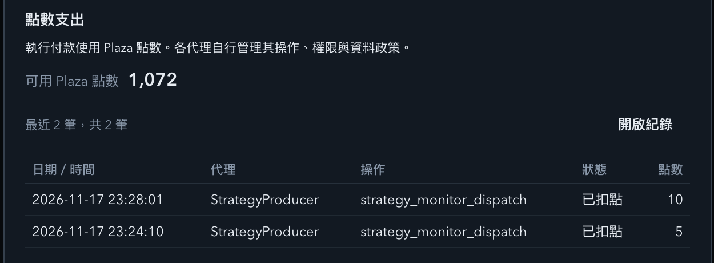
附錄 B：已知限制
- 長期間回測可能跑不完。12 個月的配對回測可能停在讀取歷史資料。請先用 6 個月以內。
- 回測不計手續費、證交稅與滑價。以觸發訊號那根 K 棒的價格成交；單一股票每次進場 1 股。
- 只能手動下模擬單。訊號會亮起，模擬下單與平倉由您自己操作。
- 兩檔股票要在同一時間都有價格。交易時間不同的市場（例如台股配美股）可能算不出價差。
- 部分文字是英文。資料來源名稱、新聞、Phema 清單中的「Retis MAS Manager」，以及地球檢視的圖層清單。
- 台灣半導體觀察的 ESG 分頁沒有資料。
- 本機 yfinance 與本機 OpenStreetMap 不支援 Intel Mac。iPhone、iPad 與不能安裝程式的電腦也無法使用；請改用富果等您自己的金鑰。
- 策略監看的價格來源顯示為代號。「監看」分頁下方的「價格來源：local-resource-…（本機）」就是本機 yfinance。
- Stadia Maps、MapTiler 與 Thunderforest 的地圖圖磚需要您自己的金鑰與付費方案。免費的 OpenStreetMap 地圖請安裝本機 OpenStreetMap。
- 資料可能延遲或不完整。tw-001 是測試網站，資料可能延遲、缺漏，或在事先通知後重設。
附錄 C：常見問題與協助
| 狀況 | 處理方式 |
|---|
| Mac 說無法驗證開發者 | 系統設定 → 隱私權與安全性 → 強制打開（只有第一次）。 |
| Windows 已保護您的電腦 | 其他資訊 → 仍要執行（只有第一次）。 |
| 收不到確認信 | 看垃圾郵件匣；幾分鐘後仍沒收到，在 Retis Terminal 的登入畫面按 重新寄送確認信。 |
| 走勢圖或新聞顯示「沒有可供您使用的…來源」 | 安裝本機 yfinance（見 第 2 節），或在 終端設定 → 資料來源 加入其他提供這些資料的資料來源。已安裝仍顯示時，確認 Retis MAS 管理員裡它是「執行中」，再按資料瀏覽器標題列的重新載入（↻）。 |
| Retis MAS 管理員顯示「此電腦無可用版本」 | 這台電腦（例如 Intel Mac）不能執行本機 yfinance 與本機 OpenStreetMap。請在 終端設定 → 資料來源 加入富果等提供歷史價格的金鑰。 |
| 瀏覽器分頁關掉了 | 選單列或系統匣圖示 → 開啟。 |
| 出現「這個 Terminal 已停止。」 | Retis Terminal 已結束。Mac 從「應用程式」、Windows 從「開始」功能表再次開啟 Retis Terminal，它會在新分頁開啟，工作區與策略都在。 |
| 舊分頁顯示「Retis Terminal 已重新啟動，並在新分頁開啟了這個視窗。」 | 在新分頁繼續使用，關閉舊分頁即可。 |
| 出現「此視窗已登出」 | 按 登入 重新登入，資料瀏覽器和策略都會回來。 |
| 畫面出現「此畫面與 Phema 的連線已中斷。」 | 按旁邊的 重新載入畫面。已儲存的策略與回測報告會保留。 |
| 策略不見了 | 策略保存在建立它的那個 Retis Terminal 視窗中，請切回那個分頁。關閉視窗會移除其中的策略。 |
| 策略監看說「此策略監看已滿」 | 刪除不需要的策略或已儲存的回測（見 7.3 與 7.5），再試一次。 |
| 我要的資料來源不在清單上 | 寫信到 datasources@retis.ai（見 第 4 節）。 |
| 價格來源沒有富果 | 確認已在同一個 Retis Terminal 視窗的 終端設定 → 資料來源 儲存富果金鑰，再重新開啟策略監看。 |
| 需要輸入券商密碼嗎？ | 不需要。測試版只做模擬交易，不會連到券商。 |
| 我的資料存在哪裡？ | 工作區、版面、策略、保留的結果與金鑰都在您的電腦上；tw-001 只保存帳號、點數與使用權紀錄。 |
需要協助
- 遇到錯誤：在 Retis Terminal 開啟 Retis MAS 管理員（開啟方式見 安裝本機 yfinance），按上方的 問題回報，它會存一個報告檔並顯示存放的位置（報告不含密碼與金鑰）。到 GitHub Issues 選 問題 / Problem，描述經過並附上報告。需要免費的 GitHub 帳號。Retis Terminal 打不開時，在「Retis Terminal 無法啟動」視窗儲存報告：Mac 按 儲存問題報告，Windows 按 否。
- 使用上的疑問：到 GitHub Discussions 的「使用問題」分類發問。
- 請不要在任何貼文中貼出金鑰、密碼，或網址中含
#local-access= 的部分。
附錄 D：從原始碼建置 Mac 與 Windows 版
一般使用者請直接下載安裝檔（見 第 1 節）。Retis Terminal 的原始碼以 MIT 授權公開在 github.com/retis-ai-sg/retis-terminal-beta，想自己建置或檢查程式的人，可以照下面的步驟從原始碼建出 Mac 或 Windows 的安裝檔。完整說明見儲存庫裡的 BUILDING.md。
需要的工具
| Mac | Windows |
|---|
| 作業系統 | macOS 12 以上，Apple 晶片較順 | Windows 10 或 11 |
| Python | 3.13，只在建置時使用（例如 brew install python@3.13） | 3.13（python.org） |
| Node.js | 20 以上，含 npm（只在建置時用來預先建好代理程式畫面） | 20 以上，含 npm |
| Git | Xcode 命令列工具內含 | Git for Windows |
| 其他 | Xcode 命令列工具：xcode-select --install | Inno Setup 6；.NET Framework 4.8 的 csc 已內建於 Windows |
建置時會下載 Python 3.13（python-build-standalone）與 requirements.lock 列出的套件，每個檔案都以 SHA-256 核對。建好的 Retis Terminal 帶著自己的 Python，使用的人不需要另外安裝 Python 或 Node.js。
建置步驟
Mac（在「終端機」執行）：
git clone https://github.com/retis-ai-sg/retis-terminal-beta.git
cd retis-terminal-beta
python3.13 -m venv .venv
source .venv/bin/activate
python -m pip install --require-hashes -r requirements.lock
python desktop/build_desktop_app.py --platform mac
Windows（在「命令提示字元」執行）：
git clone https://github.com/retis-ai-sg/retis-terminal-beta.git
cd retis-terminal-beta
py -3.13 -m venv .venv
.venv\Scripts\activate
python -m pip install --require-hashes -r requirements.lock
python desktop/build_desktop_app.py --platform windows
- 沒有
py 啟動器時，第三行改用 python -m venv .venv。
- 想建出與某個下載版本相同的程式，在
cd 之後先切到那個版本，例如 git checkout v0.1.6-beta。
- Windows 上在 0.1.4-beta 或更早複製的儲存庫，檔案可能是 CRLF 換行，請重新複製一次。
建好的檔案放在儲存庫的 dist 資料夾：
- Mac：
Retis-Terminal-<版本>.dmg 與它的 .sha256，裡面的 Retis Terminal 同時支援 Apple 晶片與 Intel。
- Windows：
Retis-Terminal-Setup-<版本>.exe 與它的 .sha256，安裝時不需要系統管理員權限，依 Windows 的顯示語言顯示英文、繁體中文、簡體中文、日文、西班牙文或法文。
其他選項：--output 改輸出資料夾；版本、連線的網站與更新來源預設取自 VERSION.json，可以用 --version、--site、--update-feed 改掉。python desktop/build_desktop_app.py --help 列出所有選項。
簽署
不加選項時建出的程式沒有簽署（Mac 是 ad hoc 簽署），安裝時會出現和 第 1 節 相同的警告。有自己的憑證時：
- Mac：加
--sign-identity "Developer ID Application: …" 簽署，再加 --notary-profile <notarytool 鑰匙圈設定檔> 公證並裝訂 .dmg。
- Windows：加
--windows-sign-command "signtool sign /fd SHA256 … {file}"，{file} 是每個要簽署的檔案。
和下載的版本比對
每個 Retis Terminal 都帶著 kit/package-manifest.json，列出程式裡每個檔案的 SHA-256。用同一版的原始碼建置後，可以和下載版本裡的同名檔案比對：
- Mac：
Retis Terminal.app/Contents/Resources/kit/package-manifest.json
- Windows：
%LOCALAPPDATA%\Programs\Retis Terminal\kit\package-manifest.json
python desktop/build_desktop_app.py --compare dist/kit/package-manifest.json "<下載版本的 package-manifest.json>"
應該只有三個檔案不同：prebuilt/prebuilt.json、prebuilt/agent-view/container-config.json 與 prebuilt/agent-view/host-release.json。它們記錄建置時所在的資料夾，Retis Terminal 啟動時會改用安裝位置。其他檔案都應該完全相同。
附錄 E：合作夥伴說明
- 富果（Fugle）行情 API 提供台股、期貨等行情資料。在 Retis Terminal 使用富果資料需要您自己的富果金鑰，方案與價格見 富果行情 API 方案（合作推廣連結）。設定方法見 第 4 節。
- 期貨需要付費方案：期貨歷史資料需要富果行情 API 的開發者或進階用戶方案；富果的免費方案沒有期貨歷史 K 線，無法做期貨的配對與回測。開發者方案的期貨與選擇權歷史資料目前為體驗開放（至 2026/12/31），在富果的文件上標示為 BETA。
- 「合作推廣連結」是 Retis 與富果的合作推廣，帶有來源標記；使用 Retis Terminal 不需要富果帳號。
- Retis Terminal 由 Retis AI 開發與營運，富果僅提供行情資料 API，不負責 Retis Terminal 的內容與功能。